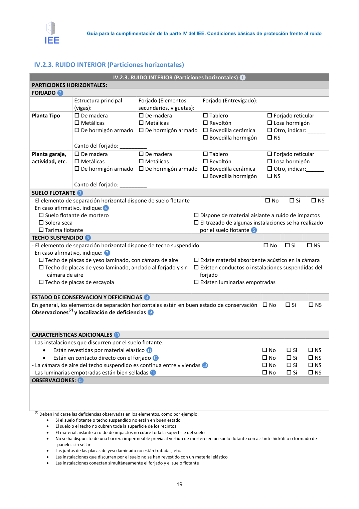
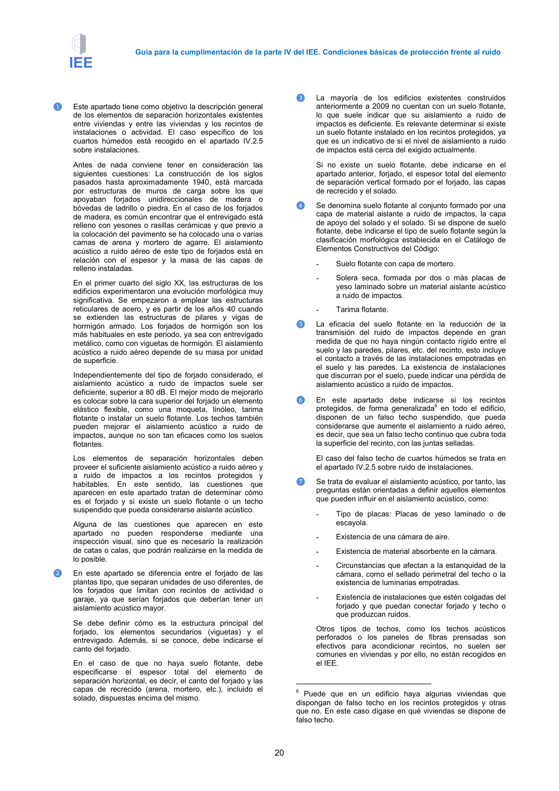

<!doctype html>
<html lang="es"><head><meta charset="utf-8">
<meta name="viewport" content="width=device-width, initial-scale=1">
<title>GUIA · IV.2.3. RUIDO INTERIOR (Particiones horizontales)</title><link rel="stylesheet" href="../estilo.css">
</head><body>
<nav><a href="../index.html">Índice</a> › <a href="../doc/guia-pdf-a5d4ef5252ba-2016-11-01-813669d3066c.html">GUIA</a> › a0014</nav>

<header class="meta">
<p><a href="../doc/guia-pdf-a5d4ef5252ba-2016-11-01-813669d3066c.html">GUIA</a> · IV.2.3. RUIDO INTERIOR (Particiones horizontales) · versión 2016-11-01 · capa guia</p>
</header>
<div class="cita"><strong>Cita:</strong> GUIA · ID técnico a0014 · IV.2.3. RUIDO INTERIOR (Particiones horizontales) · páginas físicas pág. 19-22 (impresas: ['19', '20', '21', '22'])</div>
<p>Formatos: <a href="../../contenido/docs/GUIA-PDF-a5d4ef5252ba/2016-11-01__813669d3066c/apartado/a0014__iv-2-3-ruido-interior-particiones-horizontales.json">JSON compacto</a> · <a href="../../contenido/docs/GUIA-PDF-a5d4ef5252ba/2016-11-01__813669d3066c/apartado/a0014__iv-2-3-ruido-interior-particiones-horizontales.md">Markdown</a> · <a href="../../contenido/docs/GUIA-PDF-a5d4ef5252ba/2016-11-01__813669d3066c/fuente.pdf">PDF fuente</a></p>
<p><a href="../doc/guia-pdf-a5d4ef5252ba-2016-11-01-813669d3066c.html">Ámbito del documento</a> · <a href="../doc/guia-pdf-a5d4ef5252ba-2016-11-01-813669d3066c.html#ambito">texto del ámbito</a> ·
<a href="../doc/guia-pdf-a5d4ef5252ba-2016-11-01-813669d3066c.html">documento y tablas</a></p>
<nav><a href="guia-pdf-a5d4ef5252ba-2016-11-01-813669d3066c__a0013.html">← Particiones de fábrica de una hoja5.</a> <a href="guia-pdf-a5d4ef5252ba-2016-11-01-813669d3066c__a0015.html">IV.2.3. RUIDO INTERIOR (Uniones) →</a></nav>
<h1>IV.2.3. RUIDO INTERIOR (Particiones horizontales)</h1>
<p>Tipo: tablas, figuras · nivel 3 · sección estimada: Anejo 3. Valoración del aislamiento acústico de elementos de separación horizontales y sus mejoras · padre: a0003</p>
<pre class="literal">IV.2.3. RUIDO INTERIOR (Particiones horizontales)
IV.2.3. RUIDO INTERIOR (Particiones horizontales) ❶
PARTICIONES HORIZONTALES:
FORJADO ❷
Estructura principal
(vigas):
Forjado (Elementos
secundarios, viguetas):
Forjado (Entrevigado):
Planta Tipo
 De madera
 Metálicas
 De hormigón armado
 De madera
 Metálicas
 De hormigón armado
 Tablero
 Revoltón
 Bovedilla cerámica
 Bovedilla hormigón
 Forjado reticular
 Losa hormigón
 Otro, indicar: ______
 NS
Canto del forjado: _________
Planta garaje,
actividad, etc.
 De madera
 Metálicas
 De hormigón armado
 De madera
 Metálicas
 De hormigón armado
 Tablero
 Revoltón
 Bovedilla cerámica
 Bovedilla hormigón
 Forjado reticular
 Losa hormigón
 Otro, indicar:______
 NS
Canto del forjado: _________
SUELO FLOTANTE ❸
- El elemento de separación horizontal dispone de suelo flotante
 No
 Si
 NS
En caso afirmativo, indique:❹
 Suelo flotante de mortero
 Solera seca
 Tarima flotante
 Dispone de material aislante a ruido de impactos
 El trazado de algunas instalaciones se ha realizado
por el suelo flotante ❺
TECHO SUSPENDIDO ❻
- El elemento de separación horizontal dispone de techo suspendido
 No
 Si
 NS
En caso afirmativo, indique: ❼
 Techo de placas de yeso laminado, con cámara de aire
 Techo de placas de yeso laminado, anclado al forjado y sin
cámara de aire
 Techo de placas de escayola
 Existe material absorbente acústico en la cámara
 Existen conductos o instalaciones suspendidas del
forjado
 Existen luminarias empotradas
ESTADO DE CONSERVACION Y DEFICIENCIAS ❽
En general, los elementos de separación horizontales están en buen estado de conservación No
 Si
 NS
Observaciones(7) y localización de deficiencias ❾
CARACTERÍSTICAS ADICIONALES ❿
- Las instalaciones que discurren por el suelo flotante:
•
Están revestidas por material elástico ⓫
 No
 Si
 NS
•
Están en contacto directo con el forjado ⓬
 No
 Si
 NS
- La cámara de aire del techo suspendido es continua entre viviendas ⓭
 No
 Si
 NS
- Las luminarias empotradas están bien selladas ⓮
 No
 Si
 NS
OBSERVACIONES: ⓯
(7) Deben indicarse las deficiencias observadas en los elementos, como por ejemplo:
•
Si el suelo flotante o techo suspendido no están en buen estado
•
El suelo o el techo no cubren toda la superficie de los recintos
•
El material aislante a ruido de impactos no cubre toda la superficie del suelo
•
No se ha dispuesto de una barrera impermeable previa al vertido de mortero en un suelo flotante con aislante hidrófilo o formado de
paneles sin sellar
•
Las juntas de las placas de yeso laminado no están tratadas, etc.
•
Las instalaciones que discurren por el suelo no se han revestido con un material elástico
•
Las instalaciones conectan simultáneamente el forjado y el suelo flotante

Guía para la cumplimentación de la parte IV del IEE. Condiciones básicas de protección frente al ruido
20
❶
Este apartado tiene como objetivo la descripción general
de los elementos de separación horizontales existentes
entre viviendas y entre las viviendas y los recintos de
instalaciones o actividad. El caso específico de los
cuartos húmedos está recogido en el apartado IV.2.5
sobre instalaciones.
Antes de nada conviene tener en consideración las
siguientes cuestiones: La construcción de los siglos
pasados hasta aproximadamente 1940, está marcada
por estructuras de muros de carga sobre los que
apoyaban forjados unidireccionales de madera o
bóvedas de ladrillo o piedra. En el caso de los forjados
de madera, es común encontrar que el entrevigado está
relleno con yesones o rasillas cerámicas y que previo a
la colocación del pavimento se ha colocado una o varias
camas de arena y mortero de agarre. El aislamiento
acústico a ruido aéreo de este tipo de forjados está en
relación con el espesor y la masa de las capas de
relleno instaladas.
En el primer cuarto del siglo XX, las estructuras de los
edificios experimentaron una evolución morfológica muy
significativa. Se empezaron a emplear las estructuras
reticulares de acero, y es partir de los años 40 cuando
se extienden las estructuras de pilares y vigas de
hormigón armado. Los forjados de hormigón son los
más habituales en este periodo, ya sea con entrevigado
metálico, como con viguetas de hormigón. El aislamiento
acústico a ruido aéreo depende de su masa por unidad
de superficie.
Independientemente del tipo de forjado considerado, el
aislamiento acústico a ruido de impactos suele ser
deficiente, superior a 80 dB. El mejor modo de mejorarlo
es colocar sobre la cara superior del forjado un elemento
elástico flexible, como una moqueta, linóleo, tarima
flotante o instalar un suelo flotante. Los techos también
pueden mejorar el aislamiento acústico a ruido de
impactos, aunque no son tan eficaces como los suelos
flotantes.
Los elementos de separación horizontales deben
proveer el suficiente aislamiento acústico a ruido aéreo y
a ruido de impactos a los recintos protegidos y
habitables. En este sentido, las cuestiones que
aparecen en este apartado tratan de determinar cómo
es el forjado y si existe un suelo flotante o un techo
suspendido que pueda considerarse aislante acústico.
Alguna de las cuestiones que aparecen en este
apartado
no
pueden
responderse
mediante
una
inspección visual, sino que es necesario la realización
de catas o calas, que podrán realizarse en la medida de
lo posible.
❷
En este apartado se diferencia entre el forjado de las
plantas tipo, que separan unidades de uso diferentes, de
los forjados que limitan con recintos de actividad o
garaje, ya que serían forjados que deberían tener un
aislamiento acústico mayor.
Se debe definir cómo es la estructura principal del
forjado, los elementos secundarios (viguetas) y el
entrevigado. Además, si se conoce, debe indicarse el
canto del forjado.
En el caso de que no haya suelo flotante, debe
especificarse
el
espesor
total
del
elemento
de
separación horizontal, es decir, el canto del forjado y las
capas de recrecido (arena, mortero, etc.), incluido el
solado, dispuestas encima del mismo.
❸
La mayoría de los edificios existentes construidos
anteriormente a 2009 no cuentan con un suelo flotante,
lo que suele indicar que su aislamiento a ruido de
impactos es deficiente. Es relevante determinar si existe
un suelo flotante instalado en los recintos protegidos, ya
que es un indicativo de si el nivel de aislamiento a ruido
de impactos está cerca del exigido actualmente.
Si no existe un suelo flotante, debe indicarse en el
apartado anterior, forjado, el espesor total del elemento
de separación vertical formado por el forjado, las capas
de recrecido y el solado.
❹
Se denomina suelo flotante al conjunto formado por una
capa de material aislante a ruido de impactos, la capa
de apoyo del solado y el solado. Si se dispone de suelo
flotante, debe indicarse el tipo de suelo flotante según la
clasificación morfológica establecida en el Catálogo de
Elementos Constructivos del Código:
-
Suelo flotante con capa de mortero.
-
Solera seca, formada por dos o más placas de
yeso laminado sobre un material aislante acústico
a ruido de impactos.
-
Tarima flotante.
❺
La eficacia del suelo flotante en la reducción de la
transmisión del ruido de impactos depende en gran
medida de que no haya ningún contacto rígido entre el
suelo y las paredes, pilares, etc. del recinto, esto incluye
el contacto a través de las instalaciones empotradas en
el suelo y las paredes. La existencia de instalaciones
que discurran por el suelo, puede indicar una pérdida de
aislamiento acústico a ruido de impactos.
❻
En este apartado debe indicarse si los recintos
protegidos, de forma generalizada6 en todo el edificio,
disponen de un falso techo suspendido, que pueda
considerarse que aumente el aislamiento a ruido aéreo,
es decir, que sea un falso techo continuo que cubra toda
la superficie del recinto, con las juntas selladas.
El caso del falso techo de cuartos húmedos se trata en
el apartado IV.2.5 sobre ruido de instalaciones.
❼
Se trata de evaluar el aislamiento acústico, por tanto, las
preguntas están orientadas a definir aquellos elementos
que pueden influir en el aislamiento acústico, como:
-
Tipo de placas: Placas de yeso laminado o de
escayola.
-
Existencia de una cámara de aire.
-
Existencia de material absorbente en la cámara.
-
Circunstancias que afectan a la estanquidad de la
cámara, como el sellado perimetral del techo o la
existencia de luminarias empotradas.
-
Existencia de instalaciones que estén colgadas del
forjado y que puedan conectar forjado y techo o
que produzcan ruidos.
Otros tipos de techos, como los techos acústicos
perforados o los paneles de fibras prensadas son
efectivos para acondicionar recintos, no suelen ser
comunes en viviendas y por ello, no están recogidos en
el IEE.
6 Puede que en un edificio haya algunas viviendas que
dispongan de falso techo en los recintos protegidos y otras
que no. En este caso dígase en qué viviendas se dispone de
falso techo.

Guía para la cumplimentación de la parte IV del IEE. Condiciones básicas de protección frente al ruido
21
❽
Deben describirse aquellas características, sean o no
las deficiencias7, que puedan afectar al aislamiento
acústico de los recintos, como por ejemplo:
-
Si el suelo flotante o techo suspendido no están
en buen estado, es decir, tengan grietas, fisuras,
agujeros, etc.
-
Que el suelo o el techo no cubren toda la
superficie de los recintos. En este apartado se
trata de determinar si el techo del recinto
contribuye al mejorar el aislamiento acústico de
los recintos, en tal caso, algunos diseños de
techos que sólo cubren parte del recinto, no
contribuyen a mejorar el aislamiento acústico del
recinto.
-
Si se realizan catas en el suelo flotante, se detecte
que el material aislante a ruido de impactos no
existe, no cubre toda la superficie del suelo o no
exista una barrera impermeable previa al vertido
de mortero en un suelo flotante con aislante
hidrófilo o formado de paneles sin sellar.
-
En caso de que el suelo sea una solera seca, que
las juntas de las placas de yeso laminado no estén
tratadas.
-
Las instalaciones que discurren por el suelo no se
ha revestido con un material elástico
-
Las instalaciones que discurren por el suelo
conectan simultáneamente el forjado y el suelo
flotante o conectan el suelo flotante con los
paramentos que delimitan los recintos.
-
Falta de material absorbente acústico en el techo.
❾
En cuanto a la localización de las deficiencias, indíquese
la localización de aquéllos casos más desfavorables. Si
las deficiencias son generalizadas no es necesario
especificar su localización.
Pueden darse otras circunstancias que disminuyen el
aislamiento acústico del falso techo, pero que no pueden
ser consideradas deficiencias, como la existencia de
luminarias empotradas o rejillas de aire acondicionado
en falsos techos.
❿
Este apartado recoge información adicional relativa a las
instalaciones que pueden discurrir en el suelo flotante o
por la cámara del falso techo en recintos protegidos. El
caso de las instalaciones que discurren por el suelo o
techo de cuartos húmedos está recogido en el apartado
IV.2.5.
⓫
Cuando las instalaciones que discurren por el suelo se
revisten con un material elástico, se evita el paso de
vibraciones al suelo.
Otra circunstancia que puede hacer aumentar el
aislamiento acústico a ruido de impactos, es la
existencia de un suelo flotante sobre una capa aislante a
ruido de impactos.
⓬
Cuando las instalaciones conectan simultáneamente el
forjado y el suelo flotante, se produce una disminución
7 Algunas de las características que aquí se describen, no
pueden ser consideradas deficiencias. Se trata de determinar
qué suelos y techos pueden aportar un aumento del
aislamiento acústico de los elementos de separación
horizontales. Algunos diseños de techos, no aportan una
mejora de aislamiento acústico, como por ejemplo, aquéllos en
los que haya un foseado perimetral abierto, los techos
registrables, aquéllos con perforaciones=etc.
de las prestaciones de aislamiento acústico a ruido de
impactos
⓭
Que el techo tenga una cámara de aire que conecte dos
o más viviendas, provocando una transmisión aérea
indirecta, como la que puede verse en la figura IV.2.10.
Figura IV.2.10. En azul transmisión aérea indirecta a
través de la cámara de aire en el techo de dos
viviendas. Este tipo de transmisión puede ser habitual
en la última planta de viviendas con estructura de
madera en la cubierta, en las que sólo hay un falso
techo que separa los recintos de la cámara de la
cubierta.
⓮
A menos que las luminarias empotradas estén bien
selladas, las luminarias suponen una perforación en el
techo que disminuye su aislamiento acústico.
⓯
En este apartado puede consignarse cualquier aspecto
no comentado anteriormente que pueda influir en el
aislamiento acústico de los elementos de separación
horizontales.

Guía para la cumplimentación de la parte IV del IEE. Condiciones básicas de protección frente al ruido
22</pre>
<h2>Tablas en estas páginas</h2><ul><li>p. 19 · <a href="../../contenido/docs/GUIA-PDF-a5d4ef5252ba/2016-11-01__813669d3066c/tabla/p0019_t01.json">p0019_t01.json</a> · <a href="../../contenido/docs/GUIA-PDF-a5d4ef5252ba/2016-11-01__813669d3066c/tabla/p0019_t01.csv">.csv</a></li><li>p. 22 · <a href="../../contenido/docs/GUIA-PDF-a5d4ef5252ba/2016-11-01__813669d3066c/tabla/p0022_t01.json">p0022_t01.json</a> · <a href="../../contenido/docs/GUIA-PDF-a5d4ef5252ba/2016-11-01__813669d3066c/tabla/p0022_t01.csv">.csv</a></li></ul><h2>Página visual</h2><figure><a href="../../contenido/docs/GUIA-PDF-a5d4ef5252ba/2016-11-01__813669d3066c/figura/p0019.png"></a><figcaption>Página visual 19 (fuente para fórmulas/tablas/figuras)</figcaption></figure><figure><a href="../../contenido/docs/GUIA-PDF-a5d4ef5252ba/2016-11-01__813669d3066c/figura/p0020.png"></a><figcaption>Página visual 20 (fuente para fórmulas/tablas/figuras)</figcaption></figure><figure><a href="../../contenido/docs/GUIA-PDF-a5d4ef5252ba/2016-11-01__813669d3066c/figura/p0021.png"></a><figcaption>Página visual 21 (fuente para fórmulas/tablas/figuras)</figcaption></figure><figure><a href="../../contenido/docs/GUIA-PDF-a5d4ef5252ba/2016-11-01__813669d3066c/figura/p0022.png"></a><figcaption>Página visual 22 (fuente para fórmulas/tablas/figuras)</figcaption></figure><p class="aviso">PDF fuente redistribuible: copia fiel enlazada en esta página (SHA256 verificado).</p>
<footer>Generado estáticamente desde JSON normalizado; sin JavaScript ni servicios externos.
El JSON es la fuente; este HTML es caché reproducible.</footer>
</body></html>
